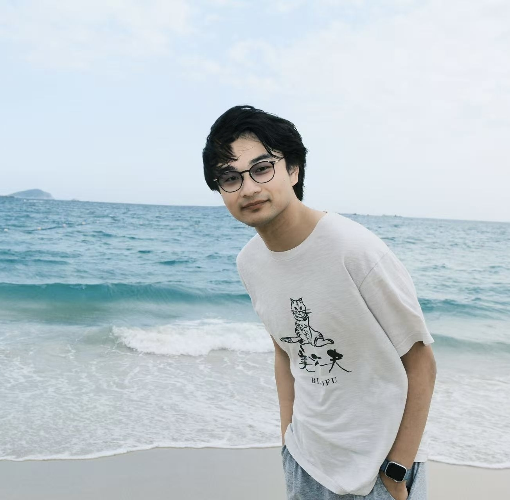
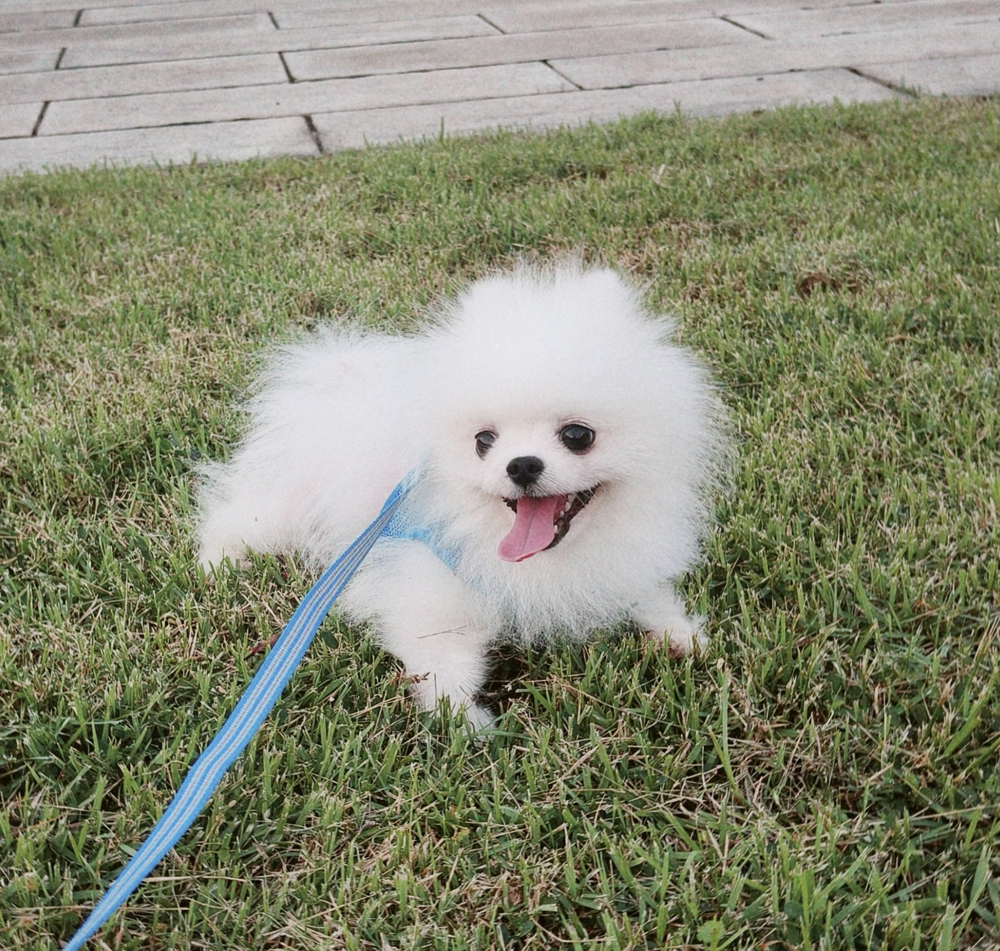

I am a Ph.D. student at the University of Hong Kong, advised by Prof. Fu Zhang and working closely with Prof. Boyu Zhou. Currently, I am also a research intern at RobbyAnt, mentored by Prof. Yinghao Xu. I received my B.Eng. in Automation from Xi'an Jiaotong University.
My research targets real-world robotic applications. I'm now working on dexterous bimanual manipulation, from data collection devices to learning frameworks—to enable efficient robot learning from human demonstrations.
If you'd like to discuss research opportunity, collaboration, or anything related, feel free to reach out via email: yyluouomm@connect.hku.hk.
Conference Reviewer: RSS, ICRA, IROS
Journal Reviewer: RA-L
I’ve got a cute but silly Pomeranian. I love J-Pop and Cantonese pop songs—highly recommend them if you’re feeling the research stress(:
